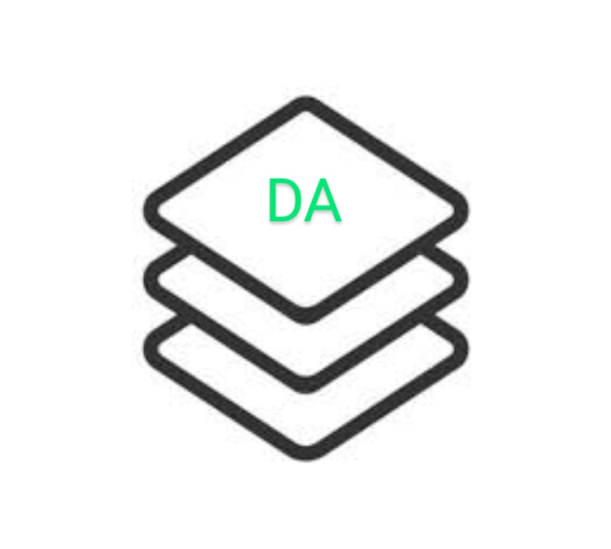

The projects are focused on enabling open-source communities to enhance security for their open-source projects and help build a security community around open-source. There is a growing trend of open-source adoption today and this growth is driving creation of lot more open-source components. It is essential to have a mechanism and community to focus on security of these open-source software components.
OSS Projects we track
We have identified a set of open source projects that we will be tracking and assessing their security posture as a community activity. This list will be a growing list where new projects gets added as we move forward.
Be-Secure Open Source Security Tech Stack and Be-Secure CE security assessment
We have defined a seven stage approach to assess and enhance the security posture of open source projects. Each stage is defined with a definitive objective and all together they will help strengthen the security posture of open source projects in a consistent manner.
The different open-source security tech stacks identified based on their characteristics and type of usage are –


 | Security for DevOps Tools (DO) |
OSS Projects we contribute
We have defined and developed a command line utility known as BeSman. We are contributing this utility to the community and will continue to help enhance its capabilities as we move on.